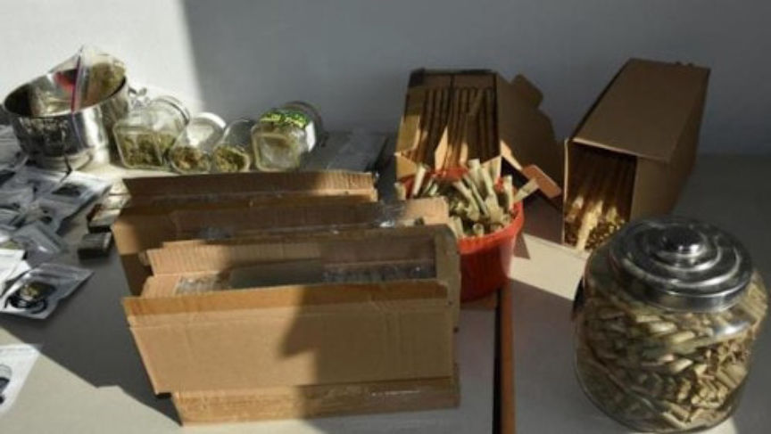
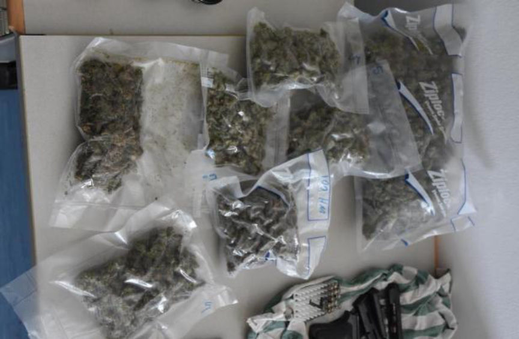
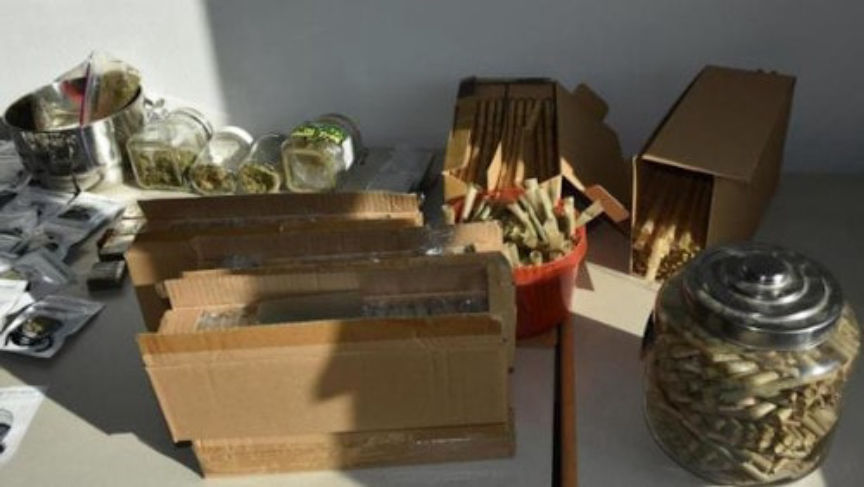
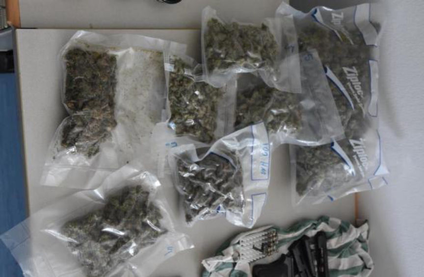

Austrian Man Arrested for Buying Marijuana on the Darkweb
In October, officials at the Customs Office in Vienna opened an investigation into a 22-year-old who had ordered several packages of marijuana from the darkweb to sell locally in Austria.
A press release from the State Office of Criminal Investigation in Vienna revealed that authorities had arrested a 22-year-old Austrian citizen for purchasing thousands of grams of marijuana from vendors on darkweb marketplaces.
On October 16, officials at the Customs Office intercepted a pack containing 600 grams of marijuana. The package was addressed to the suspect’s apartment in Vienna’s 17th district. After opening an investigation into the recipient, the Customs Office investigators learned that the intended recipient had ordered drugs from a darkweb vendor on at least two separate occasions in addition to the seized package of 600 grams of marijuana. They knew this because they had recently seized two packages of marijuana that had also been shipped to the 22-year-old.
Police in Vienna, working with investigators from the Customs Office, identified the suspect. The police, after arriving at the suspect’s apartment, executed a search warrant. During the execution of the warrant, authorities found more than 2,800 grams of marijuana. Some of the marijuana in the apartment had already been packaged for sale, according to the police. The suspect also had two converted pistols and 13,600 euros in his apartment.
During questioning, the suspect admitted that he had ordered “numerous” packages from vendors on the darkweb. He said he had only purchased cannabis products. He seemingly confessed to more crimes than the authorities had accused him of committing.
The announcement contained no additional information about the case.
A press release from the State Office of Criminal Investigation in Vienna revealed that authorities had arrested a 22-year-old Austrian citizen for purchasing thousands of grams of marijuana from vendors on darkweb marketplaces.
On October 16, officials at the Customs Office intercepted a pack containing 600 grams of marijuana. The package was addressed to the suspect’s apartment in Vienna’s 17th district. After opening an investigation into the recipient, the Customs Office investigators learned that the intended recipient had ordered drugs from a darkweb vendor on at least two separate occasions in addition to the seized package of 600 grams of marijuana. They knew this because they had recently seized two packages of marijuana that had also been shipped to the 22-year-old.
A Picture of the Seized Marijuana | LPD Vienna
Police in Vienna, working with investigators from the Customs Office, identified the suspect. The police, after arriving at the suspect’s apartment, executed a search warrant. During the execution of the warrant, authorities found more than 2,800 grams of marijuana. Some of the marijuana in the apartment had already been packaged for sale, according to the police. The suspect also had two converted pistols and 13,600 euros in his apartment.
Another Picture of the Seized Marijuana and Pistols | LPD Vienna
During questioning, the suspect admitted that he had ordered “numerous” packages from vendors on the darkweb. He said he had only purchased cannabis products. He seemingly confessed to more crimes than the authorities had accused him of committing.
The announcement contained no additional information about the case.